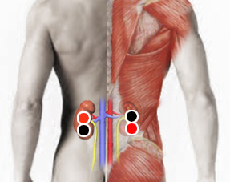

Biomagnetismo y vacunas
Generalidades:
Veamos primero los síntomas más comunes que se pueden presentar después de recibir alguna de las vacunas:
- dolor, hinchazón y enrojecimiento en el sitio donde se aplicó la vacuna (brazo)
- fiebre
- fatiga, cansancio
- dolor de cabeza
- escalofríos
- mialgia (dolor muscular)
- artralgia (dolor en articulaciones)
- adromecimiento de extremidades superiores y/o inferiores (es decir: brazos y piernas)
- síndrome pseudogripal (como si comenzara a padecer un resfriado)
- trastornos gastrointestinales como dolor abdominal o diarrea (en el menor de los casos)
En la mitad de los casos no se presenta ningún síntoma, mientras que en otros pueden ser síntomas muy leves o de intensidad moderada y se resuelven hasta 48 horas después de la vacunación. En menor porcentaje los síntomas pueden ser severos, es decir que imposibilitan a la persona para continuar con sus actividades cotidianas.
En base a los posibles efectos secundarios que puedan ocasionar la distintas vacunas presentamos una serie de pares que se pueden probar. No es necesario aplicar los pares en todas las personas vacunadas, solo en aquellas que se presenten algunos de los síntomas descritos, o que se sospeche de antemano que la vacuna pueda causarles reacciones debido a condiciones previas como reacciones alérgicas, problemas circulatorios, diabetes, inmunodepresión, entre otros.
Par
riñón - riñón (doble polaridad)
sien - sien
hígado - hígado
cinturón pancreático

El biomagnetismo no sustituye tratamiento médicos, así que si persisten las molestias por más de 48 horas consulte a su médico.
Para más información vea el video Biomagnetismo y vacunas.